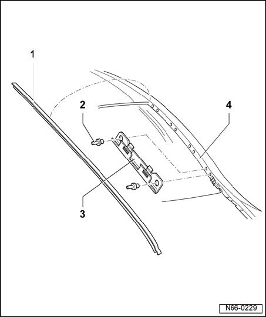

Windshield Moulding / Trim: Service and Repair
Water Deflector - Assembly Overview

1 - Water deflector
- Lift deflector by hand out of clamps, beginning at hood.
2 - Pop rivet
- Qty. 2 per retaining clip.
3 - Retaining clamp
- Qty. 4
- Retaining clamps can be replaced only after windshield has been removed.
4 - A-pillar